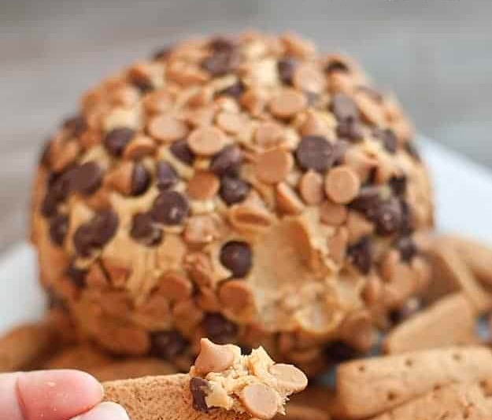

Ingredients
- 1 (8 ounce) package cream cheese, softened
- 1 cup powdered sugar
- 3/4 cup creamy peanut butter (not all-natural)
- 3 tablespoons packed brown sugar
- 3/4 cup milk chocolate chips
- 3/4 cup peanut butter chips
- Graham cracker sticks teddy grahams, and/or apple slices for dipping
Recipe instructions (taken from the book)
- Beat cream cheese, powdered sugar, peanut butter and brown sugar in large mixer bowl until blended.
- Spoon onto a large piece of plastic wrap; bring up all four corners and twist tightly forming into a ball shape.
- Freeze for 1 hour 30 minutes or until firm enough to keep its shape. Place peanut butter and chocolate chips in flat dish. Remove plastic wrap from ball and roll ball into morsels to completely cover, pressing morsels into the ball if necessary.
- Place ball on serving dish; cover and freeze for 2 hours or until almost firm. (Can be made ahead. If frozen overnight, thaw at room temperature for 20 to 30 minutes before serving.)
- Serve with graham cracker sticks, teddy grahams, or apple slices for dipping or spreading.
Return to top
Return to main page